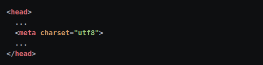

Source: https://blog.nicolas.brondin-bernard.com/comment-resoudre-les-problemes-daccents-dans-vos-pages-web/
Vous venez d'enregistrer une page web et lorsque vous l'ouvrez depuis un serveur web, tous vos accents ont disparu pour laisser place à des caractères comme Ã, ©, ¨ et d'autres encore?
Ce "bug" est dû à un mauvais encodage des caractères, ou plutôt à un encodage différent entre l'écriture du fichier html et la lecture de ce même fichier par le navigateur.
Lorsque vous enregistrez un fichier texte sur votre machine, ce dernier est stocké sous forme binaire, de 0 et de 1 car c'est de cette manière que les systèmes informatiques traitent l'information.
Si vous n'êtes pas très familier avec le concept de binaire, je vous laisse lire mon article d'introduction à ce sujet !
Logiquement, pour passer de la forme binaire à un texte lisible par nous autres humains, il faut établir une convention d'encodage et de décodage de ces caractères.
Cette convention correspond tout simplement à un tableau contenant tous les caractères avec leur forme binaire,comme illustré ce-dessous :
En l'occurence le tableau ci-dessus correspond à l'encodage UTF-8 (Universal Transformation Format - 8 bits), l'encodage désormais le plus répandu sur le web.
En regardant le tableau, on peut voir que le caractère "è" correspond au code binaire "11000011 10101000", c'est donc ce code qui se trouvera dans le fichier que vous allez enregistrer pour votre page web.
Mais si vous ne spécifiez pas l'encodage utilisé lors de l'écriture, votre navigateur utilisera l'encodage par défaut du protocole HTTP, qui est le ISO-8859-1.
Comme ces deux encodages sont différents, le navigateur ira chercher la correspondance à votre code binaire dans le mauvais tablleau, et vous renverra le caractère ¨ au lieu du è attendu.
La correction est très simple, puisqu'il suffit d'indiquer au navigateur l'encodage de votre fichier d'origine, pour ce faire il suffit d'ajouter une balise <meta> contenant l'attribut charset directement dans l'élément <head> de votre page web.
Une fois que vous aurez fait cette modification, il ne vous restera plus qu'à mettre à jour votre page web et à admirer le résultat: vos accents s'affichent enfin !